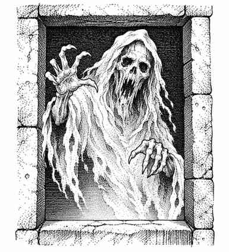

幽魂 · Spectre
 |
|
幽魂是极其强大的不死生物，主要存在于负能量位面，出没于最荒凉的地方、坟墓和地城。它们憎恨阳光与生命，日光会使其失去力量，而生命的存在会让它们哀叹自己的不死。
幽魂的寒冷触碰造成 1–8 点伤害，并从目标身上吸取 2 个生命能级。比如，11 级角色或 11 骰生物被击中，会受到 1–8 点伤害，并永久失去等级能力、生命骰等；角色可以通过继续获得经验值重新取得失去的等级，某些魔法也可能恢复等级。
幽魂不受睡眠、魅惑、定身或寒冷法术影响；毒素或麻痹也无法伤害它们。每瓶命中的圣水造成 2–8 点伤害。除非成功通过魔法豁免，否则复活术会摧毁幽魂。任何被幽魂完全吸干生命能量的人类都会变成受该幽魂控制、力量减半的幽魂。